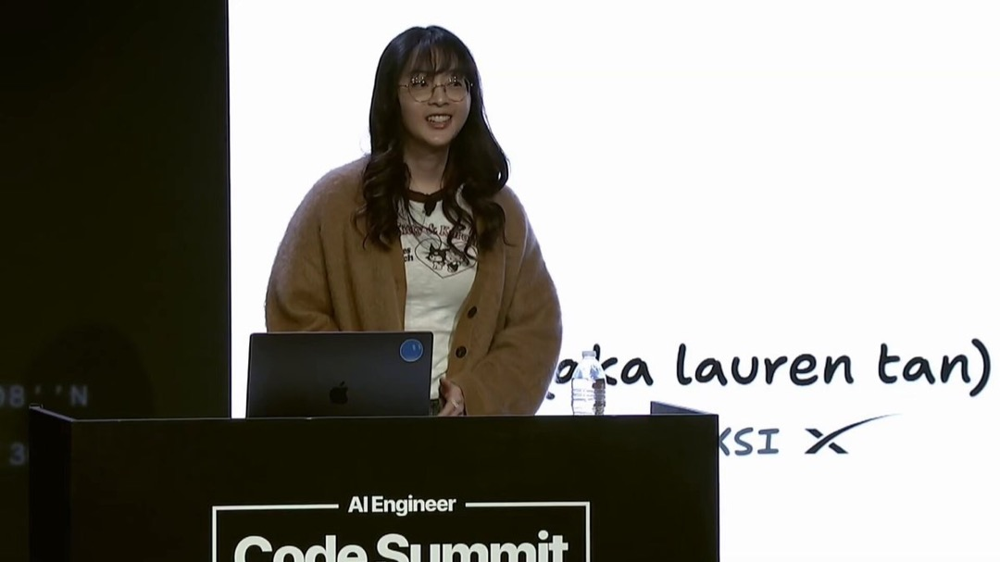
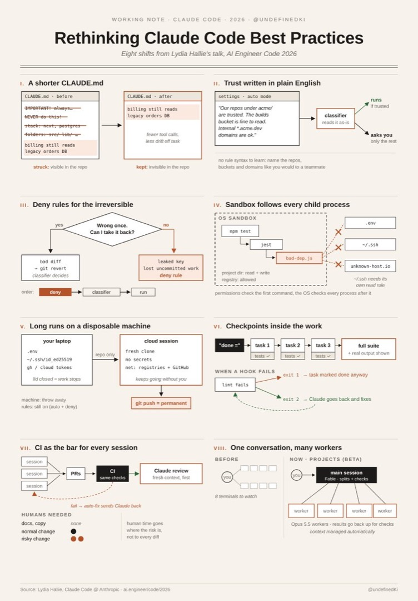
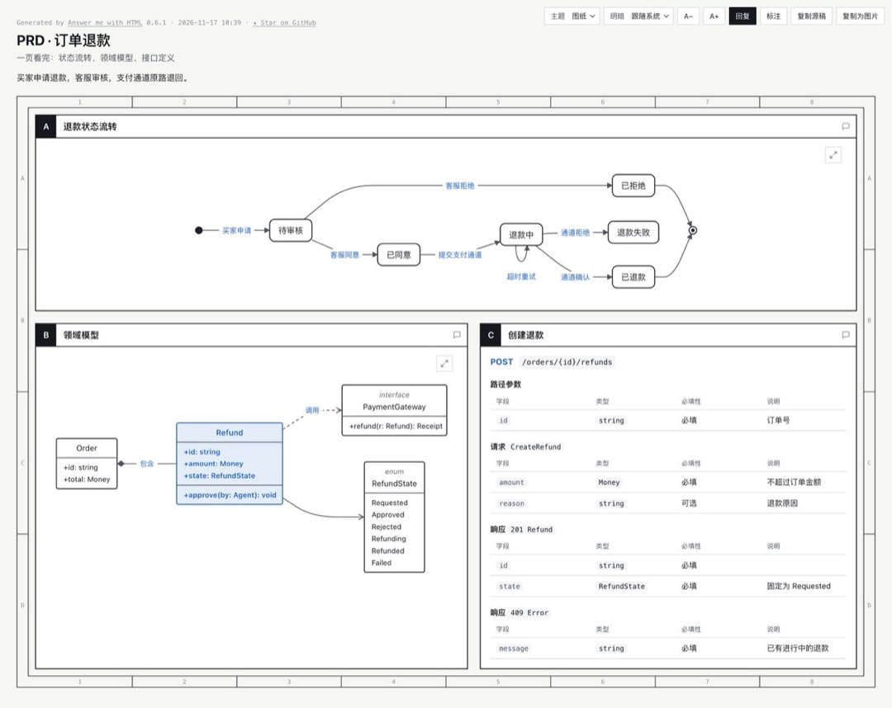
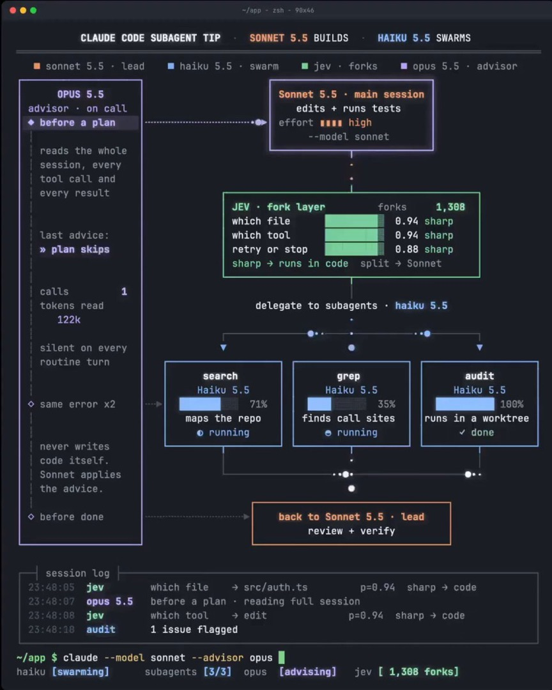

本期速览
01 GrokBot 月合万级 PR 回滚率 0.5%
02 Claude Code 团队八条日常实践
03 answer-me-with-html 补状态机等三图
04 Marin 535B-A23B 用 18T tokens 训成
05 cmux、Herdr、Runner 多 Agent 工具对比
06 Claude Code 多模型分工省 token
01｜GrokBot 月合万级 PR 回滚率 0.5%
来源（X） · @huxlab · 2026-11-17 11:01
在 AI Engineer Code Summit 上，SpaceX / xAI 的 GrokBot 工程师 Lauren Tan 抛出这句暴论后，直接甩出一组硬核数据：
上个月她一个人往生产环境合了 3,000 个 PR（全团队 1.1 万个），回滚率只有 0.5% 左右。
大多数人还在死磕 Prompt，她却靠一套反直觉的工程化打法，让 Agent 在她睡觉时自己写代码、自己验、自己合：
1. 代码库本身才是最大的输入
Agent极其擅长“照猫画虎”。与其在文档里苦口婆心写规矩，不如直接把容易出错的路径物理封死：比如产品代码里禁用 useEffect、跨进程 import 直接报错、注释几乎全禁。
2. 每次 Agent 犯错，改成 Lint 而不是改 AGENTS.md
自然语言规则（prose）是最脆弱的。每次纠正完 Agent，她都会把教训固化成确定性的静态检查或架构约束，让同类错误在提交前就绝无可能发生。
3. 用运行时验证让 Agent “自证清白”
写完不算完，强制 Agent 自己跑测试、抓截图、录视频，甚至上形式化验证，拿实打实的运行结果证明功能没问题。
4. 搭建自下而上的“信任金字塔”代码库约束 > 静态分析 > 运行时验证 > 人眼 Review。
把确定性交给工具，把人的精力留到最后一道关口。
很多团队花几个月试错才摸到的门道，她用 17 分钟就讲透了。
真正拉开人机协作差距的，从来不是模型有多聪明，而是你有没有把环境改造成“最短路径就是正确路径”：
把约束写进代码里，而不是写在文档里。

02｜Claude Code 团队八条日常实践
来源（X） · @undefinedKi · 2026-11-17 04:45
中文译文
Anthropic 的一位工程师刚刚展示了 Claude Code 团队现在实际是如何使用 Claude 的。
你们大多数人还在用老办法。
Lydia Hallie 在 Anthropic 从事 Claude Code 的工作。她刚刚公开了她团队每天使用的技巧。这些东西你在任何教程里都找不到。
1. 从你的 CLAUDE.md 中删除 "IMPORTANT!"
以当今的模型，像 "IMPORTANT" 或 "NEVER do this!" 这样的语句会把 Claude 带偏。你会得到更多的工具调用和更差的结果。
只保留 Claude 在你的代码中看不到的内容，比如某个服务仍然依赖一些遗留的源代码。你的技术栈和文件夹结构不需要写在里面。
运行 /doctor prompt-audit，它会检查你的 CLAUDE.md 和 skills，找出当前模型不再需要的内容
2. 停止批准每一条命令
自动模式从八月起就是默认设置。如果它仍然问得太频繁，打开设置，用通俗的英语写下你信任哪些仓库、存储桶和域名。那段文字会直接传给分类器
3. 为不可逆操作添加 deny 规则
在 Anthropic 的研究中，只有大约 14% 的人识别出了一个明显危险的命令。自动模式拦截了 89%。但大约每 10 个中仍有 1 个通过了。
问自己一个问题。如果 Claude 这一次弄错了，我能撤销吗？错误的代码可以回滚。泄露的密钥或丢失的未提交的工作不能，所以那些需要一条 deny 规则。
Deny 规则甚至在分类器看到命令之前就会被检查
4. 打开沙盒
普通的 npm test 会运行你没有编写的代码。一个被入侵的依赖可能读取你的 .env 或 SSH 密钥，并把它们发送到某个地方。
权限无法阻止这一点。沙盒可以，因为操作系统会阻止它，即使对命令启动的每个进程也一样。
默认情况下沙盒仍然可以读取你机器上的大部分内容，所以也要为你的 SSH 密钥添加一条规则
5. 在云端运行长时间任务
一个云端会话会得到一台自己的机器，上面有一份仓库的新副本。你的 .env、SSH 密钥和 token 不在那里。网络被限制为包注册表和 GitHub。即使你合上笔记本，它也会继续工作。
也要在那台机器上保持自动模式和 deny 规则。那台机器是一次性的，推上去的 commit 不是。
6. 添加检查点，而不只是最终审查
告诉 Claude 完成是什么样子的，要求它把工作拆分成各自有测试的任务，并让它展示实际的输出。
对于必须始终运行的检查，使用 hooks。每次编辑后跑 Linter，任务完成后跑测试，在会话结束前跑完整套测试。
大多数人漏掉的一个细节。让你的 hook 脚本以退出码 2 退出。如果退出码是 1，Claude Code 仍然会把任务标记为完成。
7. 让 CI 成为每次会话的标准
每个会话都会开一个 PR，CI 对所有 PR 运行相同的检查。CI 自动修复会在某项检查失败时把 Claude 打回去。
在 Anthropic，每个 PR 都先由 Claude 在一个全新的上下文中审查。文档和文案更改不需要人工。普通更改需要一位审查者，高风险更改需要两位。
8. 跟一个会话对话，而不是八个
在 Claude Code 项目（仍处于 beta）中，一个主会话负责拆分工作、启动其他会话并检查返回的结果。她用 Fable 做主会话，用 Opus 5.5 做执行者。上下文由系统自动管理。
用这种方式工作，Anthropic 从五月每天大约 2,500 次更改增加到九月每天超过 30,000 次更改。
原文
An Anthropic engineer just showed how the Claude Code team actually uses Claude now.
Most of you are still doing it the old way.
Lydia Hallie works on Claude Code at Anthropic. She just gave away the tricks her team uses every day. This is the stuff you won't find in any tutorial.
1. Delete "IMPORTANT!" from your CLAUDE.md
With today's models, lines like "IMPORTANT" or "NEVER do this!" can push Claude off track. You get more tool calls and worse results.
Keep only what Claude can't see in your code, like a service that still depends on some legacy source. Your stack and folder layout don't need to be there.
Run /doctor prompt-audit and it checks your CLAUDE.md and skills for what the current model no longer needs
2. Stop approving every command
Auto mode is the default since August. If it still asks too often, open settings and write in plain English which repos, buckets and domains you trust. That text goes straight to the classifier
3. Add deny rules for what can't be undone
In Anthropic's study only about 14% of people caught a clearly dangerous command. Auto mode blocked 89%. But about 1 in 10 still went through.
Ask yourself one question. If Claude gets this wrong once, can I take it back? Wrong code you can revert. A leaked key or lost uncommitted work you can't, so those get a deny rule.
Deny rules are checked before the classifier even sees the command
4. Turn on the sandbox
A normal npm test runs code you didn't write. A compromised dependency could read your .env or SSH keys and send them somewhere.
Permissions can't stop that. The sandbox can, because the operating system blocks it, even for every process the command starts.
By default it can still read most of your machine, so add a rule for your SSH keys too.
5. Run long tasks in the cloud
A cloud session gets its own machine with a fresh copy of the repo. Your .env, SSH keys and tokens aren't there. Network is limited to package registries and GitHub. It keeps working when you close your laptop.
Keep auto mode and deny rules there too. The machine is disposable, a pushed commit isn't.
6. Add checkpoints, not just a final review
Tell Claude what done looks like, ask it to split the work into tasks with their own tests, and make it show the actual output.
For checks that must always run, use hooks. Linter on every edit, tests when a task is done, the full suite before the session ends.
One detail most people miss. Make your hook scripts exit with code 2. With exit code 1 Claude Code marks the task complete anyway.
7. Let CI be the bar for every session
Every session opens a PR and CI runs the same checks on all of them. CI auto-fix sends Claude back when something fails.
At Anthropic every PR is reviewed by Claude first, in a fresh context. Docs and copy changes need no human. Normal changes get one reviewer, risky ones get two.
8. Talk to one session instead of eight
In Claude Code projects (still in beta) one main session splits the work, starts other sessions and checks what comes back. She uses Fable for the main session and Opus 5.5 for the workers. Context is managed automatically.
Working like this, Anthropic went from about 2,500 changes a day in May to over 30,000 a day in September.

引用内容
Yarchi @undefinedKi
中文译文
原文
03｜answer-me-with-html 补状态机等三图
来源（X） · @CyanCloud77 · 2026-11-17 10:42
让 agent 写方案时，状态机以前只能拿流程图硬凑。这次补了三种图：状态机、UML 类图、API 接口表
配图就是它出的PRD！
还加了「复制为图片」，整页一键进剪贴板等功能
https://github.com/QingYunA/answer-me-with-html

04｜Marin 535B-A23B 用 18T tokens 训成
来源（X） · @alacheng · 2026-11-16 17:26
Marin 535B-A23B 是一个 535B 总参数、23B 激活的 MoE 模型，用 18T tokens 训完了。
用了 Latent MoE、Quantile Balancing、Hyperball（Muon）、短卷积、XSA 等技术
做了大量小规模实验和 scaling ladder，提前预测了 loss，最终跑得比预测还好，全程没崩
https://openathena.ai/blog/marin-535b-architecture/
05｜cmux、Herdr、Runner 多 Agent 工具对比
来源（X） · @meow2149 · 2026-11-17 11:51
现在同时开十几个 Claude Code、Codex、Pi 已经很常见了。
但 Agent 一多，问题就来了：哪个在运行，哪个在等你？关闭窗口后任务还在不在？多个 Agent 能不能互相分工，而不是每个终端各干各的？
cmux、Herdr 和 Runner 都在解决这些问题，而且现在三者都具备多 Agent 管理和一定程度的协作能力。
不过，它们的底层架构和工作流设计明显不同。
对照了截至 11 月 17 日的官方文档、更新记录和部分仓库源码，从六个方面比较一下。
一、底层架构
▪︎ cmux：以可编程终端为基础
cmux 使用 Swift、AppKit 和 libghostty 构建 macOS 原生终端。
它在终端基础上加入工作区、垂直标签、分屏、通知、内置浏览器，以及 CLI 和 Socket API。
Agent 可以通过这些接口创建工作区、操作终端、发送输入，也可以控制内置浏览器。
cmux 还集成了 Claude Code Teams、Codex Teams 等机制，但没有要求所有 Agent 都采用同一套任务协作协议。
▪︎ Herdr：终端运行时与图形界面分离
这里要先区分新版 Herdr App 和原来的 Herdr TUI。
现在的 Herdr App 与 herdr-core 是一套独立系统，和旧 TUI 不共享正在运行的 Agent。
新版 App 使用 Rust、GPUI 和 Ghostty 相关组件，负责界面、终端显示和交互。
herdr-core 则独立管理终端进程、状态、消息及远程连接。
即使不打开 App，也能通过 hc 命令管理 Agent，还能通过 OpenRPC 接口开发自己的客户端。
▪︎ Runner：把任务协作做进运行环境
Runner 同样使用 Rust 和 GPUI，终端基于 alacritty_terminal。
它将桌面客户端、后台 runnerd 服务和 CLI 分开。
runnerd 管理终端进程、SQLite 数据、Agent 状态和任务通信。
与另外两个项目相比，Runner 更强调 Mission 这一层。
每个 Mission 都有独立的 events.ndjson 事件日志。
Agent 通过 CLI 写入消息，EventBus 监听变化，Router 再把消息交给指定成员。
因此，Runner 的协作不仅是多个终端同时运行，还有一套任务记录和消息路由机制。
二、Agent 状态和通知
▪︎ cmux
侧边栏可以显示工作目录、Git 分支、关联 PR、监听端口和最新通知。
Agent 需要处理时，对应终端会高亮，还能从通知面板直接定位。
通知主要通过 Agent Hooks、OSC 9/99/777 等机制触发。
cmux 也支持 OSC 7501 状态协议，不过状态展示和桌面通知是两套机制，不能混为一谈。
它还内置可编程浏览器，Agent 可以直接读取页面结构、点击元素、填写表单。
▪︎ Herdr
Herdr 会把不同工作区中的 Agent 集中显示，区分 Working、Blocked、Done 和 Idle。
状态由 Agent 通过 OSC 7501 协议报告，而不是依靠猜测终端输出判断。
不支持该协议的程序仍然能运行，只是不会显示完整的 Agent 状态。
Herdr 还会显示子 Agent，可以直接打开它们的终端查看执行情况。
▪︎ Runner
Runner 会按项目、会话和 Mission 组织 Agent，并提供桌面通知。
支持的 Agent 可以通过 Hooks 报告工作、等待输入等状态；其他场景则可能依靠终端活动辅助判断。
最新 0.20.0 还完善了 Files 和 Changes 面板，支持查看项目文件、Git 状态和 Split Diff。
但要注意，这三个项目显示 Agent 完成一轮执行，都不代表代码已经通过测试。
三、多个 Agent 如何协作？
▪︎ cmux：主要适配上层 Agent 的团队能力
例如执行 cmux claude-teams，可以把 Claude Code 团队成员映射成原生终端分屏。
Codex Teams 也有相应的集成。
Agent 成员如何分工、如何通信，主要还是由 Claude Code、Codex 等上层机制决定。
cmux 负责提供终端、工作区和控制接口，让这些 Agent 的执行过程更容易观察和操作。
▪︎ Herdr：提供通用的协作原语
herdr-core 可以通过 hc run 启动子 Agent，hc send 发送任务和结果，hc wait 等待执行完成。
还支持角色模板、父子 Agent 关系、子任务通知，以及跨机器执行。
例如让一个 Agent 启动两个子 Agent，一个负责搜索代码，一个负责检查测试结果。
父 Agent 可以等待它们完成，再读取结果继续工作。
但完整的分工策略、任务依赖和结果汇总，通常还需要自己通过 Prompt、Skill 或脚本组织。
▪︎ Runner：直接提供团队工作流
Runner 设计了 Role、Crew 和 Mission 三层结构。
Role 定义职责，Crew 把多个角色组成固定团队，Mission 负责执行具体任务。
例如：
Codex 负责实现功能。
Claude Code 负责审查代码。
Pi 负责测试和验证。
每个成员都有独立终端，可以通过共享 Feed 发送消息、交接任务、报告结果，还能向用户提问。
Runner 负责消息路由、成员状态和任务记录。
不过有一个重要限制：
Runner 不会自动为 Mission 成员创建独立的 Git Worktree。
多个 Agent 如果同时修改同一个工作目录，仍然需要提前规划文件分工，或者自行建立隔离工作区。
四、关闭窗口之后，任务还能继续吗？
这里要区分两件事：原来的进程继续运行，以及重新启动 Agent 并恢复历史对话。
▪︎ cmux
普通会话可以恢复窗口布局、工作目录、部分终端历史，以及支持的 Agent 会话。
例如通过 Hooks 保存 Claude Code、Codex、Pi、OMP 等 Agent 的会话 ID，重新打开后再调用原生恢复命令。
但这不是保存原来的进程内存。
如果希望进程在关闭 cmux 后继续运行，现在可以选择 local-tmux 或 local-zellij。
需要 Mac 关机后仍然持续执行任务，则可以使用远程主机或付费的 cmux Cloud。
▪︎ Herdr
Herdr 的终端进程由独立的 herdr-core 管理。
关闭 App，原来的 Agent 继续运行；重新打开 App，可以直接接回实时终端。
远程机器上的 Agent 也能在本地电脑休眠后继续执行，前提是远程机器和 core 保持运行。
但如果机器重启，或者 core 停止导致程序丢失，Herdr 不会自动恢复原来的 Agent 进程。
可以恢复保留的终端布局并重新提供 Shell，但不是继续之前尚未完成的执行过程。
▪︎ Runner
Runner 的后台服务 runnerd 负责持有 Agent 进程。
关闭客户端时选择 Keep running，任务可以继续，重新打开后再连接原来的终端。
如果 Agent 进程已经停止，Runner 还可以利用保存的会话身份和历史记录尝试恢复对话。
但进程恢复和对话恢复同样是两回事，后台服务异常退出后也不能保证原来的执行状态还在。
五、跨设备与平台支持
▪︎ cmux
桌面客户端主要面向 macOS，可以通过 SSH 管理远程开发环境。
另外还有 iPhone、iPad 客户端，目前处于 TestFlight Beta，早期访问包含在付费套餐中。
cmux Cloud 提供持久运行的云端 Linux 机器，但属于付费功能。
▪︎ Herdr
新版桌面 App 提供 macOS、Linux 和 Windows 版本。
官方 iPhone、iPad、Android 客户端也已经上线。
它们通过 SSH 连接运行 herdr-core 的机器，不依赖 Herdr 账号，使用 Tailscale 等方式也可以建立安全连接。
相比之下，Herdr 更适合自己已经有多台开发机、服务器或者云主机的场景。
▪︎ Runner
Runner 提供 macOS 和 Windows 原生版本，Linux 已进入 Beta。
它还支持跨设备访问和远程管理 Mission，但目前官方远程服务仍处于邀请制测试阶段，主要面向中国大陆用户。
所以不能把 Runner 的远程访问当作所有用户都已开放的功能。
六、扩展能力与开源许可
▪︎ cmux
主要通过 CLI、Socket API、Agent Hooks、自定义命令和侧边栏扩展增加能力。
macOS 客户端主要使用 GPL-3.0-or-later，部分服务端组件采用 BUSL-1.1。
如果准备基于它开发商业产品，需要注意不同目录的许可证限制。
▪︎ Herdr
可以通过 Layout 和 JavaScript Mods 修改界面，不只是调整主题，侧边栏、菜单、通知和自定义面板也能重新设计。
目前官网已经展示了数百种 Layout 和 Mod。
不过 Mods 是具有实际文件和程序访问能力的可信代码，不是沙箱插件。
新版 Herdr App 和 herdr-core 都采用 Apache-2.0。
▪︎ Runner
提供 CLI 和 Agent Skills，可以在 Agent 内启动 Mission、管理团队和读取消息。
还可以集中查看不同 Agent 的 MCP 和 Skills 配置。
目前扩展重点仍在 Agent 集成与工作流，而不是像 Herdr 一样提供通用的界面 Mod 平台。
Runner 当前采用 MIT 许可证。
七、到底应该选哪个？
▪︎ 选 cmux
如果主要使用 Mac，日常同时运行多个 Claude Code、Codex 或 Pi，希望有完善的终端分屏、Git 信息、通知、内置浏览器和自动化接口。
尤其是已经有自己的 Agent 工作流，不希望被固定的协作方式限制。
▪︎ 选 Herdr
如果经常执行后台长任务，需要连接多台远程机器，还希望在手机上随时查看、回复或接管 Agent。
或者想通过 hc 自己设计多 Agent 流程，甚至直接修改整个图形界面。
▪︎ 选 Runner
如果希望不同厂商的 Coding Agent 组成固定团队，围绕同一任务持续协作。
例如 Codex 实现功能、Claude Code 审查、Pi 测试，并且需要统一的消息传递、任务记录和人工确认入口。
三个项目现在都有很强的交叉能力，单纯按功能数量已经很难分出高下。
cmux 更重视终端和控制接口。
Herdr 更重视独立运行环境和自由定制。
Runner 更重视团队协作和任务管理。
同时运行十个 Agent，和让十个 Agent 有组织地一起完成任务，是两回事。
如果让我自己选：
日常在 Mac 上多开 Agent，我会优先使用 cmux。
需要后台长时间运行、跨机器管理和高度定制界面，我会优先考虑 Herdr。
需要一套现成的跨 Agent 团队协作机制，我会优先选择 Runner。
06｜Claude Code 多模型分工省 token
来源（X） · @xsmryze · 2026-11-17 02:19
中文译文
这真他*的是一个金矿
Anthropic 刚刚分享了 Claude Code 最好的技巧之一。
思路是：同时运行 Sonnet、Haiku 5.5 和 Opus 5.5，每个只做自己最擅长的工作。
结果更好，token 消耗少得多，因为每个任务都落在正确的模型上。
你只需要这样启动 Claude Code：
claude --model sonnet --advisor opus
分工如下：
→ Sonnet 5.5 负责运行会话、编写代码并应用修复
→ Haiku 5.5 并行搜索整个仓库：搜索、grep 和 diff 审计
→ Opus 5.5 待命作为顾问，负责重大决策并签署 diff
→ 你不再在不需要 Opus 的工作上浪费 Opus 的上下文
Opus 只在三个时刻介入：
→ 计划确定之前
→ 同一个错误出现两次时
→ 在宣布完成之前
Sonnet 构建。Haiku 搜索。Opus 审查。
JEV 工程是同样思路再下沉一层：那些不需要思考者（选哪个文件、选哪个工具、重试还是停止）的分叉在毫秒内交给 JEV，大模型只看到需要分叉的那些
完整的树
> Sonnet 5.5 运行主会话并协调工作
> search 在 Haiku 5.5 上以只读方式映射仓库
> grep 在 Haiku 5.5 上在自己的上下文中查找调用点
> audit 在 Haiku 5.5 上的一个一次性 worktree 中检查 diff
> Opus 5.5 待命作为顾问，在签署前审查合成的 diff
> JEV 在毫秒内路由微分叉
把这个树和下面这段提示粘贴到 Claude Code 中 ↓
"根据这棵树重新配置我的 Claude Code 设置：
1. 在 Sonnet 5.5 上运行主会话，以 Opus 5.5 作为顾问。
2. 在 .claude/agents 中创建三个 Haiku 5.5 子代理：search（映射仓库）、grep（查找调用点）、audit（检查 diff）。
3. 设置隔离：给 audit 使用 worktree，这样它的检查永远不会碰到我的工作分支。
4. 在 CLAUDE.md 中添加一条规则：把每个仓库搜索和测试运行都委托给 Haiku 5.5 子代理，以保持主上下文精简。
5. 通过 JEV 路由快速确定性分叉（工具选择、路径选择、重试）。
先以 diff 形式展示每一处更改。在我说可以之前不要编辑。"
↳ http://code.claude.com/docs/en/sub-agents
收藏它，以后会用得上的。
原文
THIS IS AN ACTUAL F*CKING GOLDMINE
Anthropic just shared one of the best tricks for Claude Code.
The idea: run Sonnet, Haiku 5.5 and Opus 5.5 at once, each one doing only the job it's best at.
Better results and way fewer tokens, because every task lands on the right model.
You just launch Claude Code like this:
claude --model sonnet --advisor opus
here's the split:
→ Sonnet 5.5 runs the session, writes the code and applies the fixes
→ Haiku 5.5 swarms the repo in parallel: search, grep and diff audits
→ Opus 5.5 stays on call as advisor for the big calls and signs off on the diff
→ you stop burning Opus context on work that doesn't need it
Opus only steps in at three moments:
→ before a plan locks
→ when the same error shows up twice
→ before calling it done
Sonnet builds. Haiku swarms. Opus reviews.
JEV engineering is the same move one layer down: the forks that need no thinker (which file, which tool, retry or stop) go to JEV in milliseconds, and the big models only see the ones that split
the full tree
> Sonnet 5.5 runs the main session and coordinates the work
> search maps the repo on Haiku 5.5, read-only
> grep finds call sites on Haiku 5.5 in its own context
> audit checks the diff on Haiku 5.5 in a throwaway worktree
> Opus 5.5 on call as advisor, reviews the synthesized diff before sign-off
> JEV routes micro-forks in milliseconds
paste the tree and this prompt into Claude Code ↓
"Reconfigure my Claude Code setup around this tree:
1. Run the main session on Sonnet 5.5 with Opus 5.5 as advisor.
2. Create three Haiku 5.5 subagents in .claude/agents: search (maps the repo), grep (finds call sites), audit (checks the diff).
3. Set isolation: worktree on audit so its checks never touch my working branch.
4. Add one rule to CLAUDE.md: delegate every repo search and test run to the Haiku 5.5 subagents to keep the main context small.
5. Route fast deterministic forks (tool choice, path selection, retries) through JEV.
Show me every change as a diff first. No edits until I say go."
↳ http://code.claude.com/docs/en/sub-agents
save it, it'll come in handy.

引用内容
NO1ennn @N01ennn
中文译文
原文